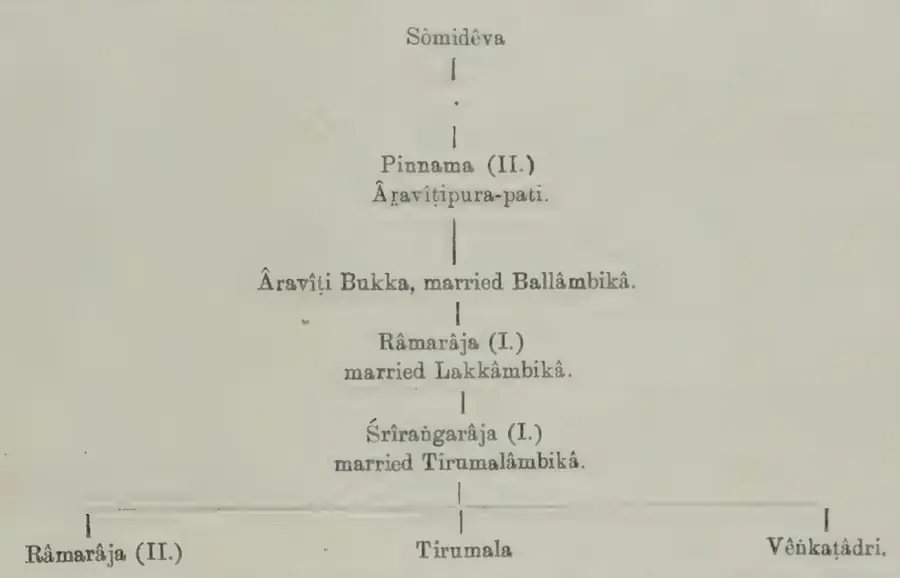
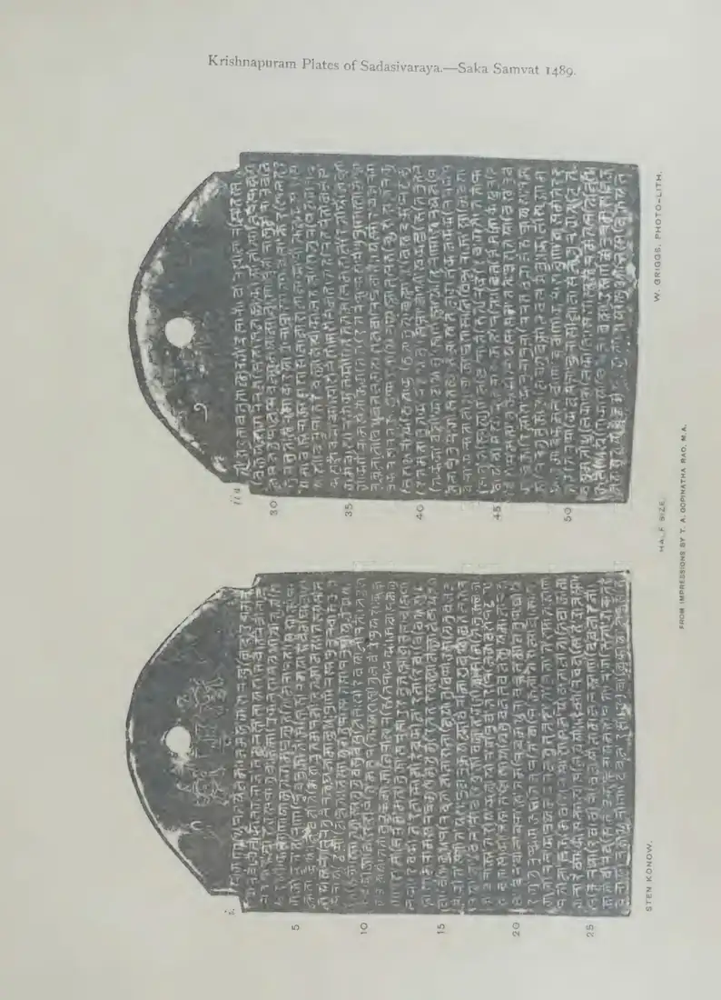
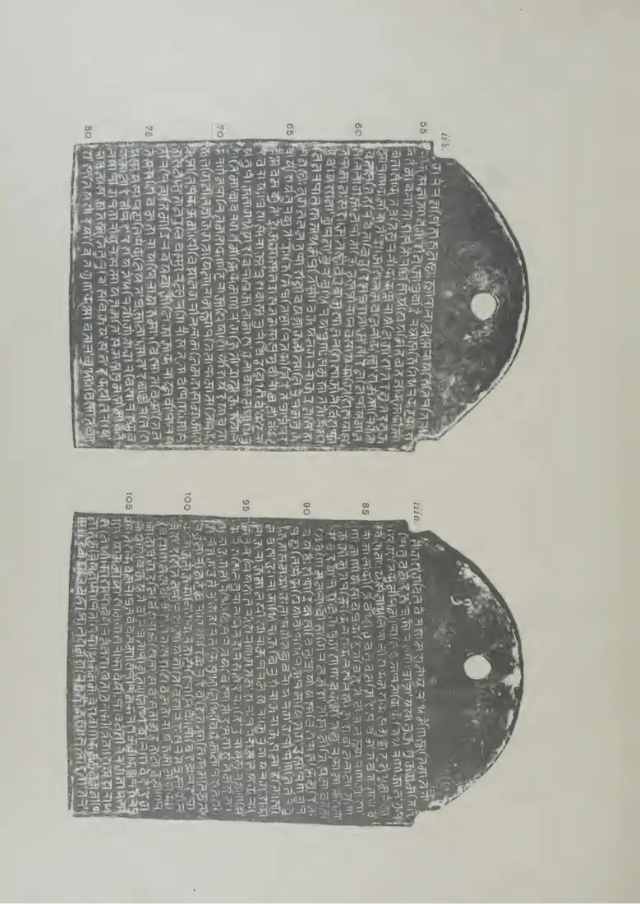
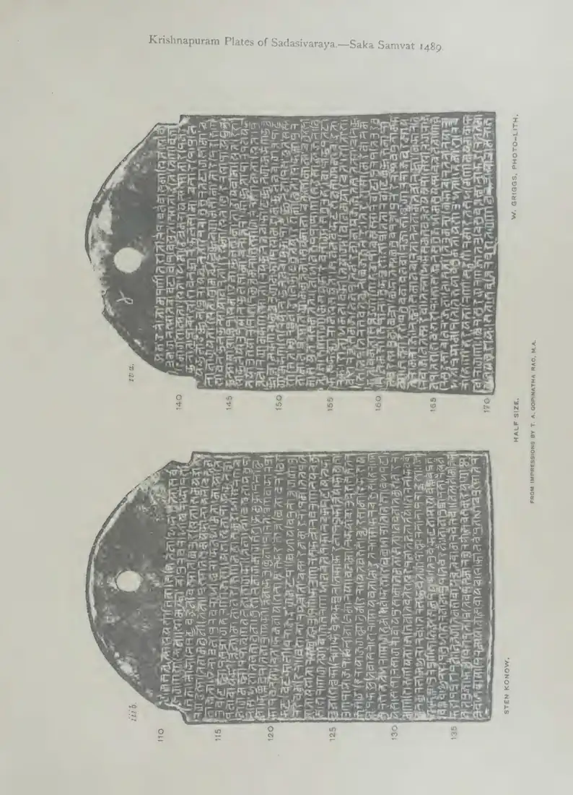
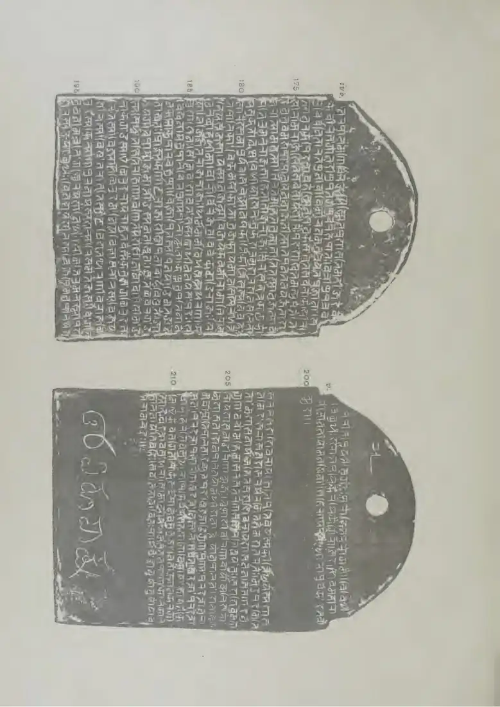

Krishnâpuram plates of Sadâśivarâya
KRISHNAPURAM PLATES OF SADASIVARAYA.
SAKA SAMVAT 1489.
SAKA SAMVAT 1489.
BY T. A. GOPINATHA RAO, M.A., MADRAS, AND RAO SAHIB T. RAGHAVIAH, B.A., REVENUE OFFICER, MADRAS CORPORATION.
The temple of Śrī Vênkatâchalapati to which this set of copper-plates belongs, is situated in the middle of Krishṇâpuram, a village six miles south-east of Tinnevelly. The temple has some fine sculptures and a few inscriptions of later times. The copper-plates were kindly secured for us by Mr. N. Gôpâlasvâmi Ayyangâr, B.A., B.L., Deputy Collector, Kollêgâl, and we now edit them from impressions prepared under our supervision.
The plates are five in number, bound together by a ring, which has also a seal loosely strung to it. The upper half of the surface of the seal bears the figure of a standing boar facing the proper right; near its face is a dagger placed with its point downwards, and over it are cut out the figures of sun and moon. The lower half has a design not uncommon to the Vijayanagara seals. On the top of the first plate and immediately above the inscription is engraved the Śrīvaishnava nâmam (of the Tengalai sect) flanked on either side with the conch and the discus (of Vishṇu). The plates (except the first) are numbered in Kannaṇa-Telugu numerals engraved on the right-hand corner of the first side of each plate. The rims of the plates are raised; and the first and last plates are engraved on one side only.
The characters are Nandinâgarî, and the language, excepting the obeisance to Gaṇapati at the beginning, is Sanskrit verse. The signature at the end is, as usual, the name of the tutelary deity of the Vijayanagara kings, Śrī Virûpâksha, and is written in the Kannaṇa alphabet. There are a few orthographical peculiarities worth noticing. The long vowel é is represented by the usual sign for é with a secondary é-stroke on the top. This new long é, as employed in our record, is the same as the vowel ai as written at the present day; but in the present inscription, this latter sound is represented by an ordinary short e with two secondary e symbols on it: e.g. Ailâvalipura- occurring in line 114, Ainâkulâ- in line 145, Ébirudarâyara-, in line 191, and Ékaiva in line 210. The Dravidian rough r is represented, as in other Vijayanagara plates written in the Nandinâgarî alphabet, with a secondary r on the top of a common r; e.g. Mûru- occurring in line 94, -Savalâkkâram- in line 141, -pâra- in line 146, Śiriyâ- in line 150, and -Āravîñ- in line 159. There are several minor errors in the inscription
such as omissions of letters, and of the amusvāra and the visarga, wrong repetitions of the same words and phrases, etc.; these are noticed in footnotes under the text. The birudas of the king and of the chiefs are known from other sources.
The inscription belongs to the reign of Sadāśivarāya of Vidyānagarī. It records that at the request of Tirumala, who was in his turn requested by Krishnappa Nāyaka or Krishnabhūpati as he is called in the inscription, Sadāśivarāya granted a number of villages to the god Tiruvēnkaṭanātha set up at Krishnāpuram by Krishnappa Nāyaka. The first part of the inscription gives in detail the genealogy of king Sadāśiva which is identical with that given in the British Museum plates of the same king published by Prof. Kielhorn1 and No. 58 of the Nāgamaṅgala tāluk of the Mysore District, published by Mr. Rice.2 Herein also Sadāśivarāya is described as being installed on the throne by the chief ministers at the instance of Rāmarāja, who is here, as in the other plates,3 called his sister's husband. Later on (vv. 84-95) the inscription details the pedigree of the family to which Tirumala belonged.
The genealogy begins with Nanda, who is said to have been born in the race of the moon. In his race was born Chalikka and in the latter's Bijjalēndra. Sōmidēva, who captured seven forts, was born in his line. His grandson was Pinnama "lord of Āraviṭipura." His son was Āraviṭi-Bukka, whose wife was Ballāmbikā. Their son was Rāmarāja who married Lakkāmbikā. To them was born Śriraṅgarāja (I.) and his wife was Tirumalāmbikā. Their sons were Rāmarāja (II.), Tirumala (I.) and Vēnkaṭādri. Tirumala is styled in the plates a Bhôja in poetry. Appended below is a genealogical tree of Tirumala's family:—

We learn from the British Museum plates that Rāmarāja II., Tirumala and Vēnkaṭādri belonged to the same family, from which Koṇdarāja of that grant was descended (see table above, Vol. IV., p. 4). Tirumala bears (vv. 98-101) the family birudas of amtembavaragaṅḍa,
1 Above, Vol. IV., p. 1.
2 Ep. Carn., Vol. IV., p. 219 of the Romanised text portion.
3 Compare the British Museum Plate Inscription, above, Vol. IV., p. 3 f., No. 7 of the Hassan tāluk, Ep. Carn., Vol. V., Part I; and No. 186 of Chennapaṭṇa, Ep. Carn., Vol. IX. Compare Prof. Kielhorn's remarks on the meaning of "sister" in this connection.
śrīmaṇdalīkaganda, birudamaīniyavibhāla, dharaṇīvarāha, Kalyānapuranātha and Vēṅga-trībhuvanīmalla.1 At the time at which the present grant was made, Râmarâja, the powerful general and minister of Sadâśiva, and his brother Vēnkaṭādri had both been dead two years, they having fallen in the famous battle of Tâlikôṭa on the 23rd January A.D. 1565. Tirumala, the second brother of Râmarâja, now became the minister and commander and was the de facto king. In the course of the same or the beginning of the next year he was to become eventually the de jure king and founded the third dynasty of Vijayanagara.
Krishnappa Nâyaka, at whose request the present grant was made, is described as the grandson of Nâgama Nâyaka and the son by Nâgamâ of Viśvanātha Nâyaka.2 He has the birudas, Kāñchipuravarâdhiśvara, Môkâlipaṭtavardhana, Samayadrôharaganda, Samayakôlâhala, Ailâvalipuravarâdhiśvara, Pândyakulasthâpanâchârya and Dakshiṇasamudrâdhipati (vv. 49-52).
In connection with the conquest of the Pândya country by the kings of Vijayanagara, we might notice that Narasa or Narasâ Nâyaka, as he is more commonly called, is said to have subjugated Mânabhûsha, the king of Madura.3 We know that Narasâ Nâyaka lived about the last quarter of the 15th century4 and that Mânabhûsha or Arikêsari Parâkrama Pândya began his reign in 1422 A.D.5 and ruled for at least 42 years, i.e. till about 1466 A.D.6 It is quite likely that this Pândya king was the one referred to as defeated by Narasâ Nâyaka.
Our inscription is dated (vv. 44-45) in the Śaka year 1489, computed by the nidhis (9), vâraṇas (8), vêdas (4), and indu (1), in the year Prabhava, on the Makara saṅkrânti corresponding to the new moon tithi of the month Pushya, on a Monday. Sadâśivarâya was then encamped on the isianð of Śrîraṅgam and made the grant in the presence of the god Raṅganâtha. The last known date for Sadâśivarâya is 1567 A.D.,7 some ten months earlier than that of our record, and hence it is likely that the king, after the disaster that befell him at Tâlikôṭa two years previously, was spending his last years, Śrîvaishnava as he was, at the sacred shrine of Śrîraṅgam. Of all Śrîvaishnava places of pilgrimage, Śrîraṅgam is the most sacred, and the Tuluva kings of Vijayanagara, at least those beginning with Krīshṇadêvarâya, were very staunch Śrîvaishnavas.8 Achyutadêvarâya, during his expedition against the Tiruvađi kingdom, is described, in the Achyutarâyâbhyudayam of Râjanâthakavi, as having halted at Śrîraṅgam and sent the son of one Sagalarâja9 to conquer the Tiruvađi râjya.10 Hence it might not be wrong to suppose that Sadâśivarâya ended his days in Śrîraṅgam, but we have not any positive proofs to support our surmise.
1 Compare verses 144-146 of the British Museum plates, where Koṇdarâja of this family wears similar birudas; above, Vol. IV., p. 21.
2 Verses 53-54.
3 Verse 11. The word has been treated as an ordinary noun by Profs. Hultzsch and Kielhorn.
4 The Dêvulapalli plates give Ś. 1427 as a date falling in the reign of Immađi-Nṛisimha; hence Narasa must have lived prior to this. See also footnote 7, above, Vol. VII., p. 79. [It should be noted that Immađi Nṛisimha was a Sâluva, and not a Tuluva like Narasa.—S. K.]
5 Sendamiḥ, Vol. IV., p. 117, and above, p. 229.
6 Sendamiḥ, Vol. IV., p. 117.
7 South-Indian Inscriptions, Vol. I, Nos. 43-46, p. 70.
8 The Sâluva kings were the disciples of Tâtâchârya. See Prapannâmritam. Krīshṇadêva wrote Amukta-mályada, Vishnuchittriyam, works relating to the life incidents of the Śrîvaishnava saint Periyâlvâr and his daughter Āṇdâḥ.
9 This Sagalarâja was the father-in-law of Achyutadêva and father of his wife Varadâmbâ. See Achyutarâyâbhyudayam. Canto III., verse 48. The printed copy of this work reads the name as Salagarâja; see p. 77; but Mr. T. S. Kuppusâmi Śâstri reads it as Sagalarâja, and we follow him in calling the father-in-law of Achyuta, Sagalarâja.
10 See Achyutarâyâbhyudayam, Canto V., verse 64.
Krishnappa Nâyaka constructed a temple in the village of Krishnâpuram and built a prâkâra round it and a tower as high as the Mandara mountain over its entrance. In front of the shrine he erected a raṅgamaṇdapa, standing on pillars containing exquisite sculptures and decorated with rows of beautiful creepers. In this newly constructed temple he set up the image of the god Tiruvênkaṭanâtha. He built a big car for the deity and surrounded the temple with broad streets with a view to provide an easy circuit for the car. It was for the conduct of the daily pújâs, for offerings, lighting, for incense, flower-garlands, etc., and for the annual celebration of the car and the floating festivals, that he requested and got from Sadâśivarâya the villages mentioned in the grant.
Though the Nâyakas are believed to have usurped the throne of the Pândyas, they still call themselves 'the establishers of the Pândya dynasty.' In corroboration of the claim of the Nâyakas of Madura to the title of Pândyakulasthâpanâchâryas, we see several hundreds of inscriptions belonging to the later Pândyas, scattered over the country believed to have been ruled over by the Nâyakas, showing that they were also raling simultaneously with the Nâyakas. One of the later Pândyas, named Śrivallabha, is described, in the Pudukkôttai plates of Ativîrarâma Pândya,1 as having established the Pândya kingdom. This Śrivallabha must have been a contemporary of Narasâ Nâyaka, for he is the brother of Mânabhûsha defeated by Narasa.2 How he established the Pândya kingdom and under what circumstances, is not apparent. But we see as a matter of fact the Pândyas ruling in a semi-independent condition over their ancestral kingdom till at least 1585 A.D.; what political relationship existed between them and the Nâyakas, we do not know.
At the end of the inscription, it is mentioned that Sabhâpati Svayambhû was the composer of the śâsana, and Viraṇâchârya, son of Viraṇa, was the engraver.
The places mentioned in the record are :—
Kilâvêmbu nâđu in the Pândya maṇdalam; Śrivallamaṅgalachâvadi in the above nâđu; Ardhatintriṇi (Arappuli ?), Villamarâyaṇ Neđungulam, Šavaĵakkâraṇ kulam, Puliyaṅgula-đdai, Pirâyankulam, Bhûsuratatâka (Parpagulam, a corruption perhaps of Pâppânkulam), Kalĵlikulam, Vêlamkulam Sundarapândyaṇ pudukkâl, Ai[ya*]ṇâkulam, Śrikulam, Éryâru Peryâlaṅgulam, Kokkantâmpârai (modern Kongandâmpârai), Paṇayaṅgulam, Muttûr hill; Puttaṇêri, Âriyakulam, Kôđikulam, Kuttukkâl, Muttûr, Râmaṅgulam, Îttampâttu, Śiriyâlaṅgulam, Pâttaikulam, Murappunâđu, Âlikuđi and Śri-Krishnapuram.
Of these Vêmba-nâđu comprises the northern portions of the Native State of Travancore and of the District of Tinnevelly, and in the former state there is a large backwater lake known by the name of Vêmba-nâđu- kâyal indicating the ancient name of the country where it is situated. We find the following names in the list of villages belonging to the Tinnevelly tâluka of the same district and situated near Krishnâpuram:—Pirayânkulam, Pâppânkulam,3 Vêlankulam, Sundarapândiyaṇ kâl, Kongandâmpârai, Paṇayânkulam, Muttûr, Âriyakulam, Murappanâđu, and Krishnâpuram. The other places we are unable to identify.
TEXT.4
First Plate.
- 1 श्रीगणधिपतये नमः । नमस्तुंगशिरश्चुबिचंद्रचामर-
- 2 चारवे । त्रैलोक्यनगरारंभमूलस्तंभाय शंभवे ।(II) [१*] हरंर्लिलाव-
1 Annual Report on Epigraphy for the year 1906, p. 72.
2 [The Pudukkôttai grant mentions Mânâbharaṇa as the brother of Śrivallabha, and, besides, Mânakavacha, whom Mr. Venkayya identifies with Arikêsarin Parakrama Pândya. The identification of Mânabhûsha with any of these two is far from being certain.—S. K.]
3 It now goes popularly by the name Pâppânkulam. This name means "the Brâhmaṇ's tank," and it has been translated into Sanskrit in the record.
From inked impressions prepared by Mr. T. A. Gopinatha Rao.
3 राहस्य दंष्ट्रादंडस्स पातु वः । हेमाद्रिकलशा यत्र धात्री च्छ्वर्त्त(च)श्यि-
4 यं दधौ ।(II)[२*] कल्याणायास्तु तद्वाम प्रत्यूहतिमिरापहं । यद्गजोप्य-
5 गजोद्गतं हरिणापि च पूज्यते ।(II)[३*] अस्ति क्षीरमयाहेवैर्मथ्यमाना-
6 त्महांबुधेः । नवनीतमिवोद्गतमपनीततमो महः ।(II)[४*] तस्यासीत्त-
7 1नुयस्तपोभिरतुलैरन्वर्थनामा बुधः पुण्यैरस्य पुरुरवा भुजब-
8 [लै]रायद्विषां 2निघ्नतः । तस्यायुर्नहुषोस्य तस्य परुषो युद्धे यया-
9 ति[*] क्षितौ । ख्यातस्तस्य तु तुर्वमुर्वमुनिभः श्रीदेवयानीपतेः ।(II)[५*] तदंशे
10 देवकीजानिर्हिदीपे तिंमभूपतिः । यशस्वी तुरुवेंद्रेषु यदीः कृष्ण
11 इवान्वये ।(II)[६*] ततोभूद्बुद्धमाजानिरीश्वरक्षितिपालकः । अत्रासमगु-
12 णभ्रंशं मौक्तिरत्नं महीभुजां [॥७*] सरसादुदभूत्तस्मान्नरसावनिपा-
13 लकः । देवकीनंदनात्कामो देवकीनंदनादिव ।(II)[८*] विविधमुक्-
14 तोद्दामे रामेश्वरप्रमुखे 3मुहुर्मुदितहृदय स्थाने स्थाने व्यधत्त य-
15 थाविधि [1*] बुधपरिवृतो नानादानानि4 यो भुवि षोडश त्रिभुवनज-
16 नोद्गीतं स्फीतं यशः पुनरुक्तय [॥८*]5 क्वावेरीमाश बध्वा(द्वा) बहुक्रजल-
17 रयां तां विलंघ्यैव शत्रुं जीवग्राहं गृहीत्वा समिति भुजबला-
18 त्तंवराज्यं तदीयं [1*] कृत्वा श्रीरंगपूर्वं तदपि निजवशे पट्टणं
19 यो बभासे (I) कीर्त्तिस्तंभं निखाय त्रिभुवनभवनस्तूयमानापदा-
20 नः ।(II)[१०*] चेरं चोक्तं च पांड्यं तमपि च मधुरावल्लभं मानभूषं वीर्यो-
21 दयं तुरुष्कं गजपतिनृपतिं चापि जित्वा तदान्यान् । आगं-
22 गातीरलंकाप्रथमचरमभूभृत्तटांतं नितांतं ख्यातः क्षीणी-
23 पतीनां सजमिव शिरसां शासनं यो व्यतानीत् ।(II) [११*] तिप्पाजीना-
24 गलादेव्योः कौसल्याश्रीसुमित्रयोः । देव्योरिव नृसिंहेंद्रात्तस्मा-
25 र्त्यङ्गिरथादिव6 ।(II) [१२*] वीरौ7 विनयौ7 नाम[म]लक्ष्मणाविव नादनौ8।
26 जातौ वीरनृसिंहेंद्रकृष्णरायमहोपती ।(II) [१३*] रंगक्षितींद्राच्युतदे-
27 वरायौ रक्षाधुरीणाविव नंदसौ9 । श्रीबांबिकायां नरसक्षि-
Second Plate ; First Side.
28 तींद्रादुभावभृतान्मुरगेंद्रसारी10 ।(II)[१४*] वीरश्रीनारसिंहस्स
29 विजयनगरे रत्नसिंहासनस्थः कीर्त्या नीत्या निरस्यन्नृग-
1 Read °नय.0
2 Read °रायुर्द्विषां.
3 हू looks like तु.
4 नि is corrected from ति.
5 Read न् in the conjunct consonant न्का, with the previous य.
6 Read °पंक्ति.0
7 Read विनयिनौ रामलक्षणाविव.0
8 Read नंदनौ.
9 Read with the British Museum plates रामकृष्णौ.
10 The British Museum plates read °भूतान्म रगेंद्र, which Prof. Kielhorn proposes to correct into °भूतां नरकेंद्र.
[I would suggest °तामुरगेन्द्र.—S. K.]
Plate 1 is bound after this page.
Plate 2 is bound after this page.
30 नक्कनहुपानप्यवन्यामथान्यान् । आ सेतोरा मुमेरोरवनि-
31 सुरनुतः स्वैरमा चोटयाद्रे (I) रा 1[पा]श्चाल्याचलांतादखिलहृद-
32 यमावर्ज्यं राज्यं शशास ।(II)[१५*] नानादानान्यकार्षीक्षनकसदमि
33 यः श्रीविरूपाक्षदेवस्थाने श्रीकाक्रहस्तीशितुरपि नगरे वे-
34 कटाद्रौ च कांच्यां । श्रीशैले शोणशैले२ महति हरिहरेहोवक्ते सं-
35 गमे च (I) श्रीरंगे कुंभकीणे हततमसि महानंदितीर्थं निवृत्तौ [॥१६*]
36 गोकर्णं रामसेतौ जगति तदितरेष्वप्यशेषेषु पुण्यस्थानेष्वा-
37 रब्धनानाविधवहक्कमहादानवारिप्रवाहैः । यस्योदंचत्तुरंग-
38 प्रकरखुररजःशुश्यदंभोधिमग्नक्ष्माभृत्यक्षच्छिदोयत्तर(त्कर)कु-
39 लिशधरोत्कंठिता कुंठिताभूत् ।(II)[१७*] ब्रह्मांडं विश्वचक्रं घटम-
40 दितमहाभूतकं रत्नधेनुं (I) समांबोधींश्च३ कल्पक्षितिरुहल-
41 तिके कांचनीं कामधेनुं । स्वर्णक्ष्मां यो हिरण्याश्वरयमपि
42 तुलापूरुषं गोसहस्रं (I) हेमाश्वं हेमगर्भं कनककरिरथं पं-
43 चलांगल्यतानीत् ।(II) [१८*] प्राज्यं प्रशास्य निर्विघ्नं राज्यं यामिव शा-
44 सितुं [*] तस्मिन्गुणेन विख्याते क्षितेरिद्रे दिवं गते ।(II)[१९*] ततोप्य-
45 वार्यवीर्य[:*] श्रीकृष्णरायमहीपतिः । विभक्तिं मणिकेयूर्नि-
46 र्विशेषं महीं भुजे ।(II)[२०*] कीर्त्या यस्य समंततः प्रयुतया४ विश्वं५ रुचै-
47 क्यं ब्रजे(I)दिल्यायंक्य पुरा पुरारिरभवद्भाक्तेक्ष[ण*]ः प्रायशः [*] पद्मा-
48 क्षोपि चतुर्भुजोजनि चतुर्वक्त्रोद्भवत्पद्मभूः६ (I) काक्की खड्गम-
49 'थाद्रमा च कमलं वीणां च वाणी करे ।(II)[२१*] शत्रूणां वासमेते दद-
50 त इति रूपा किं ७न् ८समांवुरासोब्रानासेनात्तुरंगटृति-10
51 वसुमतीधूक्किपापाक्किकाभिः । संशोस्य11 स्वैरमेतत्पतिनिधि-12
52 जलधिश्रेणिका यो विधत्ते (I) ब्रह्मांडस्वर्णमेरुप्रमुखनिज-
53 महादानतोयैरमेयैः13 ।(II)[२२*] स्तुल्यौदार्यस्पृधीभिस्स विजयन-
Second Plate; Second Side.
54 गरे रत्नसिंहासनस्थः क्ष्मापालान्कृष्णरायक्षितिपतिरध-
55 रीक्षल्य नीला नृगादीन् । आ पूर्वाद्रेरथास्तक्षितिधरकटकादा
56 च हेमाचलांतादा सेतोरर्थिसार्थश्रियमिह बहुकोक्षल्य कीर्त्या
पा looks like प्रा.
Read प्रसत०.
7 Read °धादमा.
Read °तुरंगचुटित०.
°दा० looks like °च.
2 य is corrected from ल.
5 The व of भव looks like च.
Read तु instead of न्.
11 Read संशोष्य.
3 Read °भीधी०.
6 Read भ instead of ङ्ग.
9 Read °शी० instead of °सौ०.
12 Read °त्प्रति०.
57 बभासे ।(॥)[२३*] क्वतवति सुरलोकं क्षणराये निजांशं तदनु तदनुज-
58 न्मा पुण्यकर्माच्युतेंद्रः । अखिलमवनिलोकं स्वांशमेत्यारिजेता
59 वि[ल]सति हरिचेता विद्वदिष्टप्रदाता ।(॥)[२४*] अंभोदेन निपीयमान-
60 सलिलोगस्त्येन पीतोर्भितस्तमो1 राघवसायकाग्निशिखया सं-
61 तप्यमानः सदा । अंतस्त्रैवंडबा(वा)मुखानलशिखाजालैविंशुष्को
62 [ध्दु]वं (I) यद्दानांबुधनांबुरंबुधिरयं पूर्णः समुद्योतते2 ।(॥)[२५*] समज-
63 नि नरपालस्त्वयधर्मप्रतिष्ठो विजयनगरराजद्रवसिंहा-
64 सनस्थः [*] नृगनऊनहुषादीन्नीचयन्नाजनीत्या3 निरुपमभुज-
65 वीर्यौदार्यभूरच्युतेंद्रः ।(॥)[२६*] क्षितिप्रतिष्ठापितकीर्तिदेहे प्राप्ते पदं
66 वैष्णवमच्युतेंद्रे । अध्यास्य भद्रासनमस्य सूनुर्वीरो बभौ वेंकट-
67 देवरायः ।(॥)[२७*] प्रशास्य राज्यं प्रश्वास्त्ररूपे4 विद्वन्निधौ वेंकटरा-
68 यभूपे [*] अभागधेयादचिराव्यजानामाखंडलावासमथाधिरू-
69 ढे ।(॥)[२८*] तिंमांबावरगर्भमौक्तिकमणी रंगक्षितींद्रात्मजः क्षत्रालं-
70 करणेन पालितमहाकर्णाटराज्यश्रिया । शौर्यौदार्यदयावता
71 स्वभगिनोभक्षां जग[क्षा]यिना5 (I) रामक्ष्मापतिनाप्यमात्यतिलकैः
72 क्लमाभिषेकक्रमः ।(॥)[२९*] श्रीविद्यानगरोललामनि महासाम्राज्यसिं-
73 हासने (I) संतानदु[रि]व स्फुरन्मुरगिरौ संहृत्य [वि*]वेषिणः6 । आ से-
74 तोरपि चाहिमाद्रि रचयन्नान्नो निजान्नाकरान्सर्वां पालय-
75 ते सदाशिवमहारायश्चिराय क्षमां ।(॥)[३०*] विख्यातविक्रांतिन-
76 यस्य यस्य पट्टाभिषेके नियतं प्रजानां । आनंदबाष्पैरभिशि-7
77 च्यमाना देवीपदं दर्शयते धरित्री ।(॥)[३१*] गोत्रोडारविशारदं कुव-
78 लयापीडापद्दारोडुरं सत्यायत्तमतिं समस्तसुम[न*]स्तोमावनै-
79 कायनं । संजातस्मृतिभूरुचिं सविजयं संनंदकश्रीभरं8 (I) यं
80 शंसंति यशोदयांचितगुणं क्षणावतारं बुधाः ।(॥)[३२*] विख्यातं बहु-
Third Plate ; First Side.
81 भोगशृंगविभवैरुद्दामदानोडुरं धर्मेण स्मृतिमात्रतो-
82 पि भुवने दक्षं प्रजारक्षणे । प्राप्तां यस्य भुजं भुजंगमहिभृ-
83 हिग्दंतिकूर्मोपभं (I) पातिव्रत्यपताकिकेति धरणो9 जानंतु स-
84 वैं जनाः ।(॥)[३३*] यत्पेनाधूक्पाठी शकमशकसमुच्चाटने धूमरेखा
1 Read °जिर्भो instead of °र्भिो.
2 Read समुदद्यो.
3 नी is corrected from त्य.
4 Read प्रस.
5 Read °त्तायिणा.
6 Read विद्वेषिणः.
7 Read °भिषिच.
8 Read सन्न.
9 Read धरणै.
85 रोमाक्री कीत्तिवध्वा इव भुवनमिदं सर्वमंतवंहंल्याः । [वे]-
86 णी नाणीयसीव प्रकटितविहृतेर्वीरलक्ष्या रणाग्रे (I) शं-
87 ल्ये जीमूतपङ्क्तिः1 किल 2शकलखलस्तोमदावानलानां [॥३४*] तुंगा-
88 मेव दयां पदांबुजयुगं शोणं च कृष्णां तनुं रक्ता(क्तां) नीलश्रितां3
89 त्रिवेणिमनघां वोक्षां गिरं नर्मदां [1*] तील्यानीति4 [स]मावहल्य-5
90 वयवैः शेषाद्विवासी विभुः प्रायो यस्य विशेषभक्तिमुदितः
91 पट्टाभिषेकश्रिये ।(II)[३५*] 6वोषधिपत्युपमायितगंडस्तोषणरूप-
92 जितासमकांडः [1*] 7भाषगेतप्पुवरायरगंडः पोषणनिर्भरभू-
93 नवखंडः ।(II)[३६*] राजाधिराजविरुद्रो राजराजममांहतिः । स्वा-
94 राजराजमानश्री[*] श्रीराजपरमेश्वरः ।(II)[३७*] मूर्फरायरगंडांकी
95 मेरुलंघियशोभरः । शरणागतमंदारः 8पर[रा]जभयंकरः ।(II)[३८*]
96 करदाखिलभूपालः परदारमहोदरः । हिंदुरायसुरक्षाणस्मिं-
97 धुराजगभीरधिः9 ।(II)[३९*] विष्टपत्रयविख्यातो दुष्टशार्दूलमहंनः ।
98 अरीभगंडभेरुंडो हरिभक्तिसुधानिधिः ।(II)[४०*] वर्धमानापदानश्री-
99 रङ्गनारीनटेश्वरः । इल्यादिवरुदैर्वेदितल्या10 निल्यमभिष्टुतः ।(II)[४१*]
100 11कांभोजभोजकाकिंगकरहाटादिपार्श्ववैः12 । सौविदन्नपदं प्रा-
101 मैस्संदर्शितनृपोपदः ।(II)[४२*] सोयं नोतिविशारदः सुरतरुस्फर्दाल-13
102 विश्राणनस्सर्वोर्वीशनतस्सदाशिवमहारायक्षमानायकः ।
103 बाह्यवंगदनिर्विशेषमखिलां सर्वसहामुद्दहन्विद्वक्षाणप-
104 रायणो विजयते वीरप्रतापोन्नतः ॥ [४३*] निधिवारणवेदेंदुग-
105 णिते शकवत्सरे । प्रभवे वत्स[रे*] मासि पौषे मकरसंक्रमे ।(II)[४४*]
कृष्णपक्षे च पु-
106 ख्यायाममायां सोमवासरे । कावेर्याः पावने14 तीरे रंगनाथस्य
107 संनिधौ ।(II)[४५*] काश्यपान्वयरत्नेन शाश्वतातुलकीर्त्तिना । शश्वदाराध-
108 नाहृष्टविश्वनाथार्पितश्रिया ।(II)[४६*] धर्ममर्मविदा त्राणकर्मठेन मनोषि-
109 णा । दुर्मदारिमहा(ही)पालशर्मदारिभुजौजसा ।(II)[४७*] सल्यादृतांतरं-
Third Plate ; Second Side.
110 गेण सल्कृत्याश्रयशोभिना । सहितेनाधिकं भूल्या सर्व-
111 क्षग(गु)णशालिना ।(II)[४८*] श्रीमत्कांचीपुरवराधीश्वरांकोपशो-
1 Read °पंक्तिः.
2 Read सकल°.
3 Read °क्षिता.
4 Read तीर्था°.
5 स is corrected from perhaps न.
6 Read षोषधि°.
7 Read भाषेगे°.
8 °रा° is corrected from another letter.
10 Read °विरुद्दे°.
9 इंदुदंशशिखामणिः in the British Museum plates.
11 Read कांबीज°.
12 Read °पार्श्व°.
13 Read °स्प°.
14 Originally पावनी was written.
112 भिना । मोकालिपदृधडं नविष्यातविरुदश्रिता ।(II)[8८*] समयद्रोह-
113 रगंडष्यातिना मनुनीतिना । प्रख्यातसमयकोलाहलचिह्नेन
114 भास्वता ।(II)[५०*] ऐलावकीपुरवराधीश्वरांकेन धीमता । मा[द्या]ति-
115 रुवटिक्ष्मापसमांगहरणौजसा ।(II)[५१*] यशश्विना1 पाडाकुलस्था-2
116 पनाचार्यकीर्तिना । मानोन(न्येन) दक्षिणमहासमुद्राधीश्वरेण च ।(II)[५२*]
117 नागमक्ष्मापपौत्रेण नकनाभागकीर्तिना । श्रीविश्वनाथभूपा-
118 लसिंधुशीतक्कभातुना ।(II)[५३*] सुशीलनागमागर्भशुक्तिमुक्ताफलात्म-
119 ना । क्षणभूपतिना युष्यकीर्तिना करु[णा*]व्यिना ।(II)[५४*] परितः प्रण-
वाकारप्र-
120 कारवलयांचितं । कमनीयशिलास्तंभकदंभोत्तंबितांवर3 ।(II)[५५*] विशं-
121 कटविटंकाकीविराजद्रंगमंटपं । विधाय विपुलोत्तुंगगोपु-
122 रं देवमंदिरं ।(II)[५६*] विशालां रथवोती4 च स्यंदनं मंदरोपमं । तत्र प्रति-
123 ष्टातार्यश्रीतारकब्रह्मरूपिणे5 ।(II) [५७*] करुणारसकलोलवरुणालयचक्षु-
124 से(घे) । शरणागतगी[वर्ी]णभरणाधीनचेतसे ।(II) [५८*] कालचक्रघटीयंत्रक-
125 ल्पनाशिल्पकारिणे । कैवल्यकल्पलतिकाकंदकोपघ्नकीर्त्तये ।(II) [५९*] कौसुभा-
126 रुणपाथोजपा[श्वं] लीनाकिमोलया6 । वनमालिकया चारुवक्षसे हतर-
127 क्षसे ।(II)[६०*] इंदिराया 'जगन्मातुर्मदिरायितवक्षसे । 8 च्छंदसामादिकंदाय
128 चंपकद्युतिवासरे(से) ।(II)[६१*] शरणाय वतामिंदुतरणाकरचक्षसे9 । हिरण्या-
129 सुरसंहत्रे10 धरणा गृहमेधिने ।(II)[६२*] 11 कंशादिविबुधारातिहिंसाविधपटी-
130 यसे । संसारसागरौर्वाय पुंसामानमतां सतां ।(II)[६३*] नवनीतमुशे12 नंदर-
131 मणीशिक्षणीयतां । अभिनीतवते शश्वदपनीतनतातये ।(II)[६४*] निरलो-
कवचो-
132 मूलमुरकीमधुरारवैः । तरकीकुवंते गोपीस्मरलीलापराञ्चुखीः13 ।(II)[६५*] अ-
133 14श्मिन्कृष्णापुरे पूर्णसा(सां)निडंग समुपेयुषे । तिरुवैकटनाथाय विष्णवे प्रभ-
134 विष्णवे ।(II)[६६*] धूपदीपसुधाहारनानापूपनिवेदनैः15 । नानापुष्पोपहारैश्च नै-
135 कदीपप्रदीपनैः ।(II)[६७*] वृत्तगीतमहावाद्यच्छत्र(क्ष)चामरवैभवैः । नित्यनैमि-
त्तिका-
Plate 3 is bound after this page.
Plate 4 is bound after this page.
136 नंतपूजां कर्तुं विशेषतः ।(॥)[६८*] प्रतिवर्षसमारब्धरथोत्सवसमृदये1 । योष-
137 प्लवोत्सवायापि रम्ययात्रोत्सवाय च ।(॥)[६९*] श्रीकीक्ष्वेप्र(पु)नाडी च प्रख्यातं प[i]-
Fourth Plate ; First Side.
138 द्यमंडले । तां(ता)मपर्णीनदीतीरे पावनं वासमाश्रितं ।(॥)[७०*] श्रीव-
139 ल्लमंगलख्यातचावटावपि विश्रुतं । ख्यातार्द्धतिंत्रिणीवृक्षा-
140 दिमार्गेशान्यतां श्रितं ।(॥)[७१*] धर्माद्विल्लमरायस्य ख्यातादपि नेडुं-
141 कुलात् । प्राचं श्रीशवक्कार्रकुक्कमीमांचलादपि ।(॥) [७२*] पुक्कि-
142 यंकु क्रोडैकुलप्पिरायन्कुलतोपि च । भुमुरतटागसीमांच-
143 लानाग्नेयतां2 श्रितं ।(॥)[७३*] श्रीमत्किंक्कुक्क्यामसीमांतादपि दक्षि[णं] [i*]
144 श्रीवेलंकुक्कुल्याया नैरृतीं दिशमाश्रितं ।(॥)[७४*] सुंदरश्रीपांद्य[पूतु]-
145 कुल्यायाश्चापि पश्चिमं । 3ऐनाकुक्कसीमांताद्वायवीमाश्रितं दिशं ।(॥) [७५*]
146 श्रीकुक्कैर्यारुपेर्यालंकुक्कसीमांचलोत्तरं । कोक्षंतापारंपनयंकु-
147 क्योरुभयोरपि ।(॥)[७६*] अपि 4मुत्तुर्मलाभिख्यागिररीशान्यतां श्रितं । पु-
148 त्तनेरियामकेण ख्यातारियकुक्केन च ।(॥)[७७*] कोटिकुक्क्यामकेण कुत्तु-
149 कल्यामकेण च । मुत्तुरुयामकोपि5 श्रीमद्रामंकुक्केन च ।(॥)[७८] ईत्तंपाट्टु-
150 यामकेण शिरियालंकुक्केन च । युक्तं पाटैकुलेनापि संयुतं मस्य-
151 शोभितं ।(॥)[७९*] मुरप्पुनाडाक्किकुटिभूत्रयोदशमान्वितं । श्रीक्षणापुर-
152 नामानं प्रख्यातं याममुत्तमं ।(॥)[८०*] सर्वमा(नांचतुःस्मीमा)न्यं चतुःस्मी(सो)-
153 मासंयुतं च समंततः । निधिनिक्षेपपापाणसिद्धसाद्यजलान्वि-
154 तं ।(॥)[८१*] अक्षिख्यागमिमयुक्तं6 देवभोग्यं सभूरुहं । वापीकूपतटा-
155 कैश्च कश्च्छारामैश्च सयुतं7 ।(॥)[८२*] अनेन वैकटेशेन भोग्यमाचंद्रता-
156 रकं । दानाधमनविक्रीतियोग्यं विनिमयोचितं ।(॥)[८३*] शीतांशो-
157 वैश्ररत्नं समजनि नृपतिर्नदनामाथ जज्ञे तत्संतत्यां चलिक-
158 क्षितिपतिरभवतत्कुले8 विज्जलेंद्रः । तदंश9 सोमिदेवोलम-
159 कृत विमतासमदुर्गाणि हृत्वा पौत्रस्तस्यार्ववीटीपुरपतिरुदभू-
160 त्पिनमक्षोक्षिपालः10।(॥) [८४*] भूकल्पशाखी प्रति(यि)तारवीटिवृक्षमापो-
161 भवदस्य स्नुः । बलांबिका तस्य बभूव पत्नी पुरंदरस्थेव पुलोमकं11
1 Read °समृद्धये.
2 Read °दागेय°.
3 The metre demands one more letter in this foot and hence w. proje ose to read the name of this Village as ऐ[य*]नाकुळ. [I would prefer to scan Áyint°.—S. K.]
Read °भिख्य°.
5 Read °यामकेणापि ?
6 Read °संयुक्तं.
7 Read °कच्छारामैश्च संयुतं.
8 Read °भवत्तरकुले.
9 Read तदंशं.
10 Read °क्षीणि°.
11 Read °कन्या.
162 न्या ।(II) [८५*] अस्मादशेषभुवनावनवारिजाक्षाप्रच्छृं(च्छृं)गारराजवदजाय-
163 त रामराजः । लक्ष्मीसमानचरिता ललनामतल्ली लक्षांबिका रति-
164 रिवाजनि तस्य देवी ।(II)[८६*] 1तस्याधिकैसमभवत्तनयस्तपोभि[:*] श्रीरंगराज-
165 2नृपतिशशिवंशदीपः । आसंज्वलत्सु भुजधाममु यस्य चित्रं नेत्राणि वै-
166 रिसुद्रुसां3 च निरंजनानि ।(II)[८७*] सतीं तिरुमलांबिका(कां) चरितलीलयारुं-
167 धतीप्रथामपि तितिक्षया वसुमतीयशो रुंधतीं । हिमांशरिव-
168 रोहिणीं हृदयहारिणीं सन्नुणैरमोदत सधर्मिणीमयमवाप्य-
169 वीराग्रणीः ।(II)[८८*] स्वैरं सुदृग्भरणजातरुचिसुवृत्तं4 स्वालोकदूरिततमा-
170 स्तनयस्तदीयः । अत्रासवृत्तिरवदातगुणानुवर्त्तो आ(श्री)रामराज-
Fourth Plate; Second Side.
171 नरपालमणिर्विरेजे5 ।(II)[८९*] यस्मिन् प्रशासति महीं जदे[वै]-6
172 कवीरे भंगो नदीषु पतगेषु च पक्षपातः । वल्लीषु पल्लव-
173 रुचिर्वनितारतेषु नीवीविमोचनमभून्नियतं प्रजानां ।(II)[९०*] स-
174 त्यानुरक्तेरिदरावहेस्मिन् संन्नके7 संभृतसर्वलोके । (श्रीरा)
175 श्रीरामराजे श्रितसत्वसौर्यं8 शौरेः पदं शाश्वतमभ्युपेते ।(II)[९१*] त-
176 दनु भुवमशेषां पालयन्ब्राजनीत्या तपनतनयजेता दा-
177 नरीत्या महत्या । भरतमहितभूमा भाति तस्यानुजन्मा व-
178 रतिरुमलराजसाहितीभोजराजः9 ।(II)[९२*] स्वैरं 10संहृत्तकंटको-
179 थ सुकृतोत्कृष्टं विधायाखिलं भूकेदारमुदारदानसलिलो-11
180 सारैस्ममापूर्यं च । संवद्भ्यानघ(कीर्त्ति)कीर्त्तिसस्यनिवहं-
181 तत्पालिकां विक्रमश्चीकांतां भुजकायमानसिखरे12 धत्ते-
182 हि यस्तेजसा ।(II)[९३*] यस्यानुजन्मा विजयैकनर्मा रामाभिराम[?]-
183 तुलबाहुधामा । वीरो विरेजे13 भुवि वेंकठाद्रिराजः श्रि-
184 या निर्जितराजराजः ।(II)[९४*] धर्ममर्मविधस्तस्य14 धरणीक-
185 ल्पशाखिनः । सोमवंशावतंसस्य स्वाधीननयसंपदः ।(II)[९५*] श्री-
186 विश्वनाथभूपालचिरपुण्यफलात्मना । कृष्णभूपतिनाने-
187 न क्व[पा]कूपारचक्षुषा15 । (II)[९६*] विज्ञापितस्य विनयादिमतद्धांत-1
1 Read °स्ममभव°.
4 Read °सुवृत्तः.
5 Read जगदेक°.
6 Read °स्माहिती°.
12 Read °शिखरे.
15 पा is corrected from था.
2 Read °नृपतिशशिवंश-
5 The letters विरे are engraved over an erasure.
7 A mistake for संपन्नक.
10 Read संहत°.
13 Read विरेजे.
16 Read °ध्रुंत°.
3 Read °सुदृशं.
6 Read °सरव शौर्यं.
11 Read °सलिला°.
14 Read °विदस्तस्य.
188 भास्वतः । प्राज्यकर्णाठराज्यश्रीस्थापनाचार्यविश्रुतेः ।(॥)[६७*] आ-
189 त्रेयगोत्रपाथोजमार्त्तांडस्य मनस्विनः । अंतेंबवरगंड-
190 स्य 1सिध्वंतक्षितिरक्षिणः ।(॥)[६८*] 2वणितेयशेमो नानावर्णश्रीमंड-
191 लीकगंडस्य । ऐ(ए)विरुदरायराहुतवेस्यै3कभुजंगविरुदभ-
192 रितस्य ।(॥)[६९*] 4विख्या[त]विरुदमंनियविभाक्लीलस्य विजय-
193 शीलस्य । विश्वंभराभृतिस्फुटविश्रुतधरणीवराहवि-5
194 रुदस्य ।(॥)[१००*] कल्याणपुरनाथस्य शल्यारिममतेजसः । वेंगत्रि-
195 भुवनीमल्ललिंगस्थिरयशोनिधेः ।(॥)[१०१*] श्रीमत्तिरुमलक्ष्मापशे-
196 खरस्य दयांत्रुधेः । विन[यी*]दार्यशीलस्य विज्ञमिमनुपालयन् ।(॥)[१०२*]
Fifth Plate.
197 परीतः प्रयतैः[*] स्त्रिग्दैः पुरोहितपुरोगमैः । विविधै-
198 विंत्रुधैः श्री(श्री)तपथिकैरथि(धि)कैर्गिरा ।(॥)[१०३*] मदाशिवमहारा-
199 यो माननीयो मनस्विनां । सहिरण्यपयोधारापूर्वकं दत्तवा-
200 न्मुदा ।(॥)[१०४*]
201 सरसप्तदाशिवरायक्षितिपतिवर्यस्य कीर्त्तिधुर्यस्य [*] शास-
202 नमिदं "सरासनदासरथेरमितहेमदानरतेः" ।(॥)[१०५*] मृदुपदमिति
203 तांम्र(ताम्र)शासनार्थं महितसदाशिवरायशासनेन । अभण्दत्त-
204 गुणं वचोमहिम्ना सरसतरेण सभापतिस्वयंभूः ।(॥)[१०६*] मदाशिवमहा-
205 रायशासनाद्दीरणात्मजः । त्वष्टा श्रीवीरणाचार्यो व्यलिखतां-8
206 म्रशामनं (॥)[१०७*] दानपालनयोर्मध्ये दाना[च्छे]योनुपालनं । दानास्वर्ग-9
207 मवाप्नोति पालनादच्युतं पदं ।(॥)[१०८*] स्वदत्ताद्विगुणं10 पुण्यं परदत्तानुपा-
208 लनं । परदत्तापहारेण स्वदत्तं 11निस्फलं भवेत् ।(॥)[१०९*] स्वदत्तां परदत्तां
209 वा यो हरेति12 वसुंधरां । षष्टिर्वर्षसहस्राणि13 विष्टायां जायते क्रि(क)-
210 मिः(॥) [११०*] ऐ(ए)कैव भगिनी लोके सर्वेषामेव भूभुजां । न भोज्या न करशा-
211 ह्या देवदत्ता वसुंधरा ।(॥)[१११*] सामान्यो[यं] धर्ममेतुनृपाणां14 काले काले
212 पालनीयो भवद्भिः । सर्वानेतान्माविनः पार्थिवेंद्रान्भूयो भूयो याच-
213 ते रामचंद्रः॥ [११२*]
214 श्रीविरुपाक्ष15
ABRIDGED TRANSLATION.
Verse 1 invokes Śambhu, v. 2 the boar incarnation of Vishnu, and v. 3 Ganēśa.
V. 4-5 trace the genealogy of the family from the Moon.
(V. 6-7.) In his (i.e. Turvasu's) line was born the husband of Dēvakī. king Timma, as famous among the Tuļuvas as Krīshṇa was among the Yadus. To him was born king Ēśvara, a jewelled crown of virtues to kings, (and) the husband of Bukkamā.
(V. 8.) To him, the son of Dēvakī, was born king Narasa, as Kāma (was born) from the son of Dēvakī (Krīshṇa).
V. 9-10 describe his generosity and his conquest of the kingdom of Taincha (i.e. the Chôla country) and Śrīraṅgapaṭtaṇa.
(V. 11.) Conquering the Chèra and the Chôla, Mānabhūsha, the Pāndya king of Madura, also the fierce Turushka, king Gajapati and others from the Ganges to Lankā, and from the Eastern to the Western mountains, he made all kings bear his commands on their heads as flowers on their crowns.
(V. 12-14.) Of Tippājī and Nāgalâdēvī, like Rāma and Lakshmana of Kausalyâ and Sumitrâ to Daśaratha, were born to him two sons Vira-Nṛisiṅha and Krīshṇarâya who were brave and modest. To him were also born of Ôbâmbikâ two (more) sons able in protecting (the subjects), Raṅgakshitindra and Achyutadēvarâya.
(V. 15.) Vira-Nārasiṅha, seated on the jewelled throne at Vijayanagara, eclipsing by fame and policy Nṛiga, Nala, Nahusha and others of the world, praised by the Brâhmagas from Sêtu to Mêru, from the Eastern to the Western mountains, ruled the kingdom pleasing the hearts of all people.
(V. 16-18.) His praises.
(V. 19.) Having ruled his large kingdom without obstacles, the king of the earth, famous for his virtues, went to heaven as if to rule the kingdom of heaven.
(V. 20.) After him, king Krīshṇarâya, of unabated valour, bore the whole of the earth on his shoulders with as much ease as a jewelled bracelet.
(V. 21-23.) Praises of Krīshṇarâya.
(V. 24.) When Krīshṇarâya had taken for his part the world of the dévas (i.e. had died) his younger brother Achyutêndra, doer of good deeds, conqueror of foes, worshipper of Vishnu, who made gifts satisfying the desires of the learned, got for his share the whole of this earth.
(V. 25-26.) Praises of Achyutêndra.
(V. 27.) When, having set up on earth a body in the form of his fame, Achyutêndra reached Vishnu's abode, his brave son Vēnkaṭarâya ascended the throne.
(V. 28-30.) He who was like the flower-arrowed Kāma, and was ruling his kingdom (well), owing to the bad luck of his subjects, soon went to the city of Indra. The son of Raṅgakshitindra and the precious pearl of the sacred womb of Timmâmbâ, king Sadâśivarâya, who was like the santâna tree on the hill of dévas, was duly installed on the throne that was the jewel of the prosperous town, Śrī-Vidyânagarī, by king Rāma, his sister's husband, the protector of the goddess Śrī of the great kingdom of Karṇata, who was an ornament to all Kshatriyas, who was endowed with valour, nobility and kindness, and by the chief ministers.
(V. 31-43.) Praises of Sadâśivarâya.
(V. 44-45.) On Monday, the new moon tithi of the dark half of the month Pausha, during the Makara-saṅkramaṇa, in the year Prabhava, (corresponding to) the Śaka year counted by the nidhis (9), the vâraṇas (8), the védas (4), and indu (1) (i.e. Śaka 1489) on the banks of the sacred river Kâvêrī, in the presence of (the god) Raṅganâtha, (this grant is made).
(V.v. 46-57.) By Krishṇabhūpati, of sacred fame, the ocean of mercy; who was the jewel of the family of Káśyapa; on whom much wealth was conferred by (the gol) Viśvanātha, who was pleased with his devotion; who knew the truth about duty; who was always studying the art of protecting others; who was a wise man; whose mind was purified by truthfulness; who shone by his desire to do good actions; who possessed great wealth; who was endowed with the virtues of a wise man; who bore the title 'the lord of Kāñchīpura;' who was also the recipient of the famous title 'Mókálipaṭṭavardhana;' who was also known as the 'Samayadrôhara-gaṇḍa;' whose policy was like that of Manu; who also shone by the celebrated distinction 'Samayakóláhala;' who was also entitled 'the lord of Ailâvalīpura;' who by his valour deprived the insolent king of the Tiruvaḍi-rājya of the seven (component) parts (of his kingdom); who was famous as the 'Pâṇdyakulasthâpanâchârya;' who was the revered lord of the great Southern ocean; who was the grandson of king Nāgama; who was equal to Naja and Nâbhâga in fame; who was the cool moon of the ocean named king Viśvanātha; who was the pearl of the oyster, viz. the womb of the virtuous Nāgamâ,—was built a temple at Krishṇapura, which was encircled by a wall of the shape of the prapara and a broad and lofty tower. It has a large raṇja-mandapa raised on a collection of beautiful stone pillars and adorned with rows of spouts (?). He built a car like the Mandara mountain and also broad roads round the temple, for the propitiation of the god Vishṇu set up there (i.e. in the temple),
[ (V.v. 58-66.) Praises of the god set up in the temple of Krishṇapuram.]
(V.v. 67-69.) (For the worship of the god Vishṇu) who shone in this place under the name of Tiruvênkaṭanātha, by means of burning incense, by lights, and by the offering of good food, cakes, etc., by means of offerings of several kinds of flowers. by illumination with many lights, by means of dancing, singing and music. with umbrellas, chauris, on days both ordinary and special, for the car festival at the beginning of each year, for the floating festival during the hot season, and for the yâtrôtsara,
(V.v. 70-82.) The excellent village known by the name of Śrī Krishṇapura. resplendent with cereals,—including the villages known as Puttanêri, Āriyakulam, Kôtikkulam, Kuttukkal, Muttûr Râmaṅgulam, Îttampâṭṭu, Śiriyâlaṅgulam, Pâṭaikkulam together with thirteen bhú in Muṣappu-nâḍu (and) Ālīkuḍi, which is situated in the Kīlavêmba-nâḍu belonging to the Pâṇdya-mandala, on the banks of the pure river Tâmraparpi, in the chûvaḍi known as Śrivallamaṅgalam, and which is situated to the north-east of the road commencing with the Arddhatintripi tree, etc.; east of Villamarâya's charity and the famous Neḍuṅgulam and of the extreme limits of Śrī-Śavalakkâṇa-kulam; south-east of Puliyaṅgula-ôḍai, Kulappirâyankulam and of the extreme limits of Bhûsura-taṭaka; south of the extreme limits of Kallīkkulam; south-west of the Vĉlaṅgula channel; west of Śrī-Sundara-Pâṇdya's new channel; north-west of the extreme limits of Ainâkulam; north of the extreme limits of Śrīkulam, Ěryâru-Peryâlaṅgulam and of Kokkantâmpâṇa and Panayankulam; and north-east of the hill known as Muttûrmala—is to be enjoyed by (this god) Vênkaṭeśa as a sarvamânya.
(V.v. 96 and 102 to 104.) Having been requested by Krishṇabhūpati, the fruit of the long penance of Viśvanātha, whose eyes are the ocean of mercy, Tirumala Râja respectfully requested Sadâśiyarâya, the respected of the learned men, who, surrounded by his staunch friends, priests, followers, all kinds of learned men, and ambassadors and by their advice, made this gift joy-ously with gold and pouring of water.
V.v. 105-106 mention that Sabhâpati Svayambhu wrote the śāsuna.
V. 107 mentions that Viraṇâchârya, son of Viraṇa, engraved the document.
V.v. 108-112: the usual imprecatory verses.
Line 214. The signature 'Śrī Virúpâksha' in the Kannaḍa alphabet.



